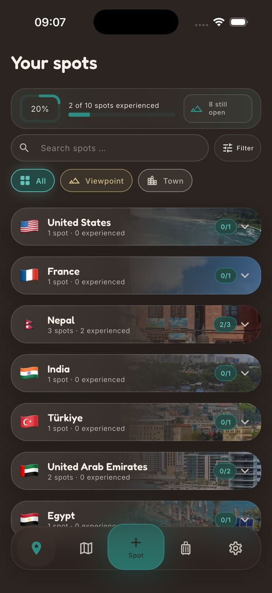

SpotJar creates the spot
The shared link becomes a saved spot automatically. You can also paste a link, search by name or add a place by hand.
Save a place in Google Maps or Apple Maps. SpotJar keeps its note, category and trip plan together until you are ready to open the route in Maps.
See how it worksUse Maps just as you normally would.
Maybe it is a cafe a friend shared, a mountain pass for next summer or a lake for Sunday.
You can do it without leaving Maps.
It appears in the share menu alongside your other apps.
SpotJar brings the name, address and location with it. You can add the rest whenever you like.
The shared link becomes a saved spot automatically. You can also paste a link, search by name or add a place by hand.
Make a note of why the place caught your eye and choose a category such as view, food or hike. You do not need to plan a trip yet.

Each spot appears as a pin. Colors show whether it is open, experienced, must-see or a favorite. The map also shows which countries you have visited.
Add the spot to a trip, collect more places and arrange them by day. During the trip, mark each place as experienced once you have been there.

One tap sends the whole trip to Google Maps or Apple Maps as an ordered route, ready for navigation.